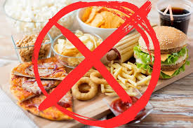

WELLNESS Hospital are provided verious cancer treatment as below
Cancer is caused by a dysfunction in cellular growth and behavior. In a healthy body, new white blood cells are regularly generated to replace old, dying ones. The excessive production of white blood cells in the bone marrow leads to blood cancers.
Symptoms of blood cancer vary by disease but typically include the following:


Lung cancer refers to different types of cancer that develop within the lungs. Like all cancers, lung cancer begins at the cellular level and causes abnormal cells in the lungs to reproduce rapidly and out of control. Over time, these cells can form a mass of tissue known as a tumor.
Most people who are diagnosed with lung cancer experience one or more of the following symptoms:

To diagnose lung cancer, your doctor will obtain your medical history, perform a physical exam, and order different tests that confirm the presence of the disease. Doctors also may order imaging tests, such as a chest X-ray or computed tomography (CT) scan of the chest or abdomen, to check for the presence of a tumor or mass in the lungs.
If they believe that lung cancer has spread to other parts of the body, including the brain or bones, they may order the following:
A brain tumor is a growth of cells in the brain or near it. Brain tumors can happen in the brain tissue. Brain tumors also can happen near the brain tissue. Nearby locations include nerves, the pituitary gland, the pineal gland, and the membranes that cover the surface of the brain. Brain tumors can begin in the brain. These are called primary brain tumors. Sometimes, cancer spreads to the brain from other parts of the body. These tumors are secondary brain tumors, also called metastatic brain tumors.
Symptoms can vary widely depending on the part of the brain that's involved. Some patients have no symptoms at all. But, for those who do, symptoms may include, but are not limited to:
Children may experience some additional symptoms that may include:
Doctors can perform a series of tests to diagnose suspected brain tumors. diagnostic imaging studies (most commonly MRI or CT scan) are often obtained to better understand whether a tumor exists, and if it does, to evaluate its location, size, and effect on surrounding tissue.
foods high in dietary fibre, such as grains and cereals, tomatoes, citrus fruits (such as oranges, grapefruit, lemons, limes) cruciferous vegetables like broccoli, cabbage, Brussels sprouts, bok choy and other Asian greens. Berries are among the healthiest foods you can eat.


Raw or undercooked meat, poultry, fish, eggs, and shellfish,Unpasteurized milk, yogurt, cheese, and juice, Highly refined, processed foods, and processed meats,Foods that contain hydrogenated oils. High amounts of sugar in the diet may be associated with an increased risk of breast cancer. this food is avoid.
